North American electrical accessories
Standard American light switches
Rating: 15A 125V
Traditional American light switches are very distinctive in their shape and operation, rarely found in other parts of the world. The switch has a small lever that protrudes outwards and is moved up or down to turn the lights on or off, similarly to toggle switches used in hobby electronics.
The examples shown here are both made by Leviton; one is a "two-way" switch, while the other is a "three-way" one, for controlling a light from multiple locations. The latter is also compatible with aluminium wiring, which may be found in old installations and requires special accessories and grease to avoid corrosion. Both are rated at 15A, as light fixtures tend to be connected on the same circuit as power sockets and they're often used to control specific ones in a room powering floor lamps.
Installation is similar to American power outlets: the wire is bent in a loop shape and is then placed around the screw, which holds it securely in place after being tightened. The faceplate is held on with two screws and is different from the ones used for sockets, with just a small rectangular opening. It's crucial that this is always properly installed, as when removed the terminals (placed on the side) are very easy to touch and can pose a shock hazard.
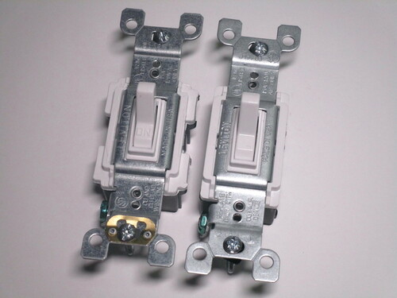 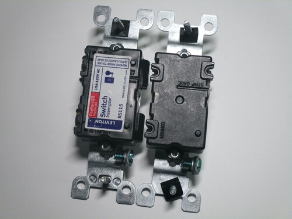 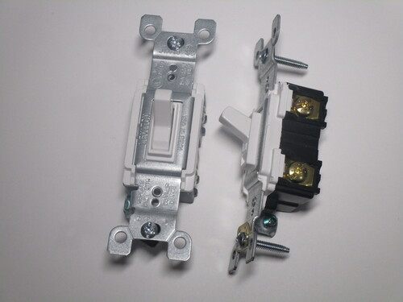{kind=link}
{kind=link}
{kind=link}
"Decora"-style switch
Rating: 15A 277V
In recent years, "Decora" or "paddle" light switches have become popular and are nowadays ubiquitous in new or renovated installations. Their main feature is very large surface area that looks modern and is easier to press compared to traditional switches.
This style originated in the Decora series from Leviton, designed to have a clean and modern look and has now become a de-facto standard. Decora accessories, as well as ones from other manufacturers, all use the same rectangular faceplate, helping with intercompatibility.
Compared to the switch shown previously, the terminals are identical, though this one also has a quick wiring feature. Touching the terminals with the faceplate removed is still possible, but much harder. Interestingly, this model is rated for 277V circuits, often used for lighting on industrial or commercial installations using a 480V supply.
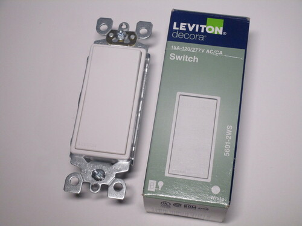 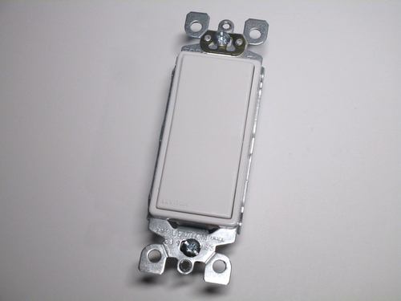 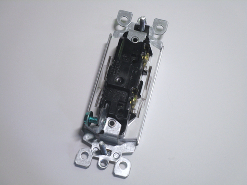{kind=link}
{kind=link}
{kind=link}
Leviton Decora Edge light switch
Rating: 15A 277V
The new Decora Edge series from Leviton introduces some important safety and convenience elements to North American electrical accessories. The main change is in the screwless terminals, which function similarly to Wago wire connectors. Wiring is done simply by opening the lever next to each terminal, pushing the wire in, and then closing the lever again.
Another difference is in the frame, made of both plastic and metal, which is much larger and has small protrusions to link to other Decora Edge items when used in bigger wall boxes. The absence of any easily accessible live parts, as well as the larger frame, makes it virtually impossible to receive an electric shock when the faceplate is removed, and quite difficult even when the switch isn't screwed in.
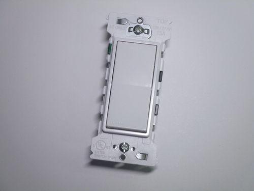 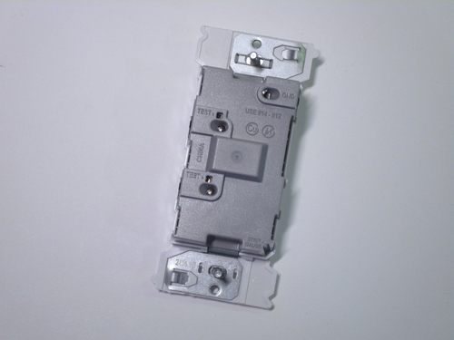 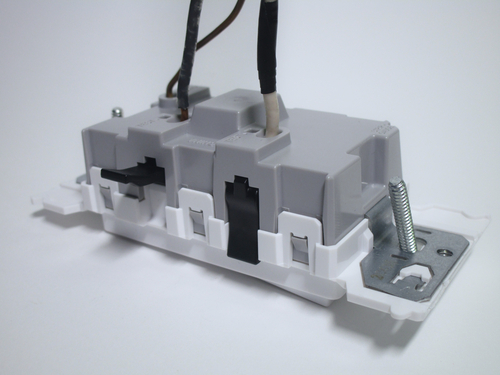{kind=link}
{kind=link}
{kind=link}
Combined light switch and power socket
Rating: 15A 125V
Combining a light switch with a power outlet may seem strange at first, but it makes sense in situations where a larger wall box isn't available, or if another socket is desperately needed. The switch is marked with "ON" and "OFF" and has a small indicator light underneath, useful if the connected fixture isn't easily visible, like the ones for a closet or outside the house. The socket is marked with "TR" (tamper-resistant) as it features safety shutters, mandatory on new installations in the US.
It should be noted that this is different from UK-style switched sockets, as the switch is clearly intended just to control a light; there's even a built-in link between the input side of the switch and the line terminal of the outlet. Wiring it to control the socket is possible, but it'd require removing this link and adding a jumper lead between its output connection and the aforementioned line terminal.
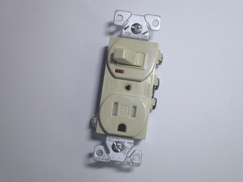 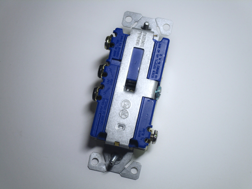 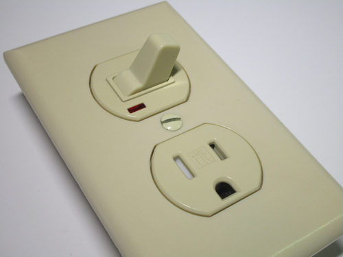{kind=link}
{kind=link}
{kind=link}